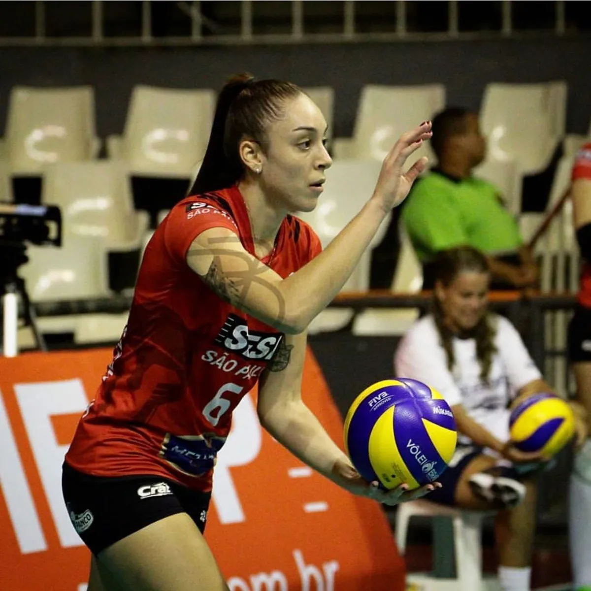

historia de sua carreira!

Aqui conta a historia da jogadora e toda sua trajetória
Vindo de uma pequena cidade, foi muito conhecida por seu talento no voleibol
Toda sua trajetória
Naturalidade: Tamboara (PR) Data de Nascimento: 22/05/1996 Altura: 1,8
Gabi se encontra no time do sesi atualmente, mas já esteve no Fluminense, Osasco,
vôlei Bauru, Maringa/amavôlei, entre outros. Já foi campeã da Superliga, do Sul-americana, da Copa Brasil, entre outros titulos.
Já esteve na seleção brasileira feminina, pórem pediu dispensa para cuidar de sua saúde
